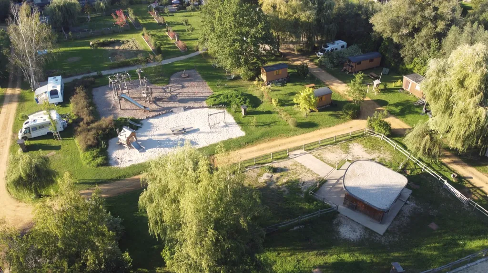
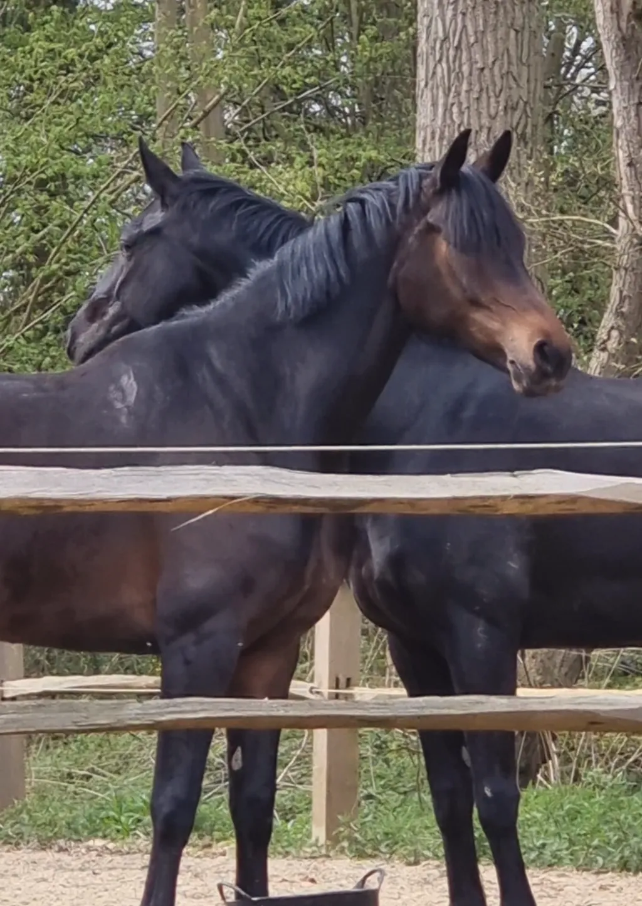
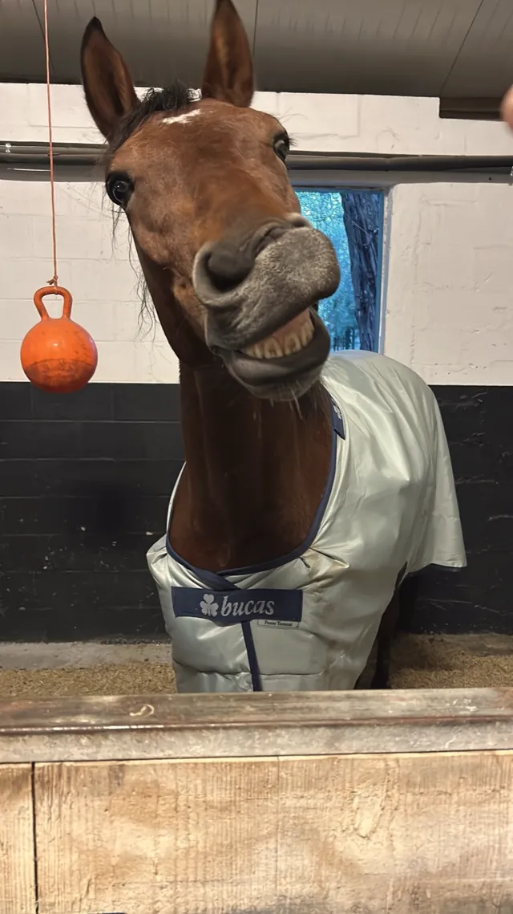
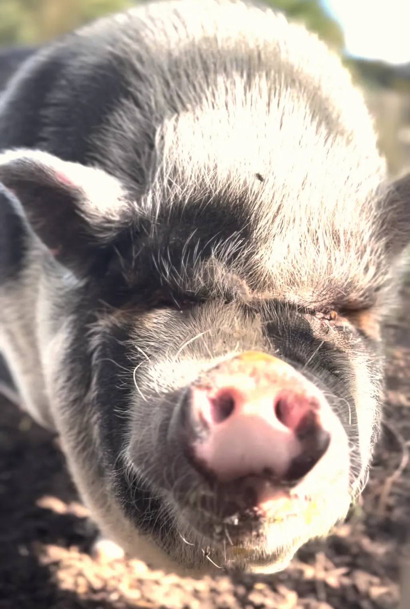
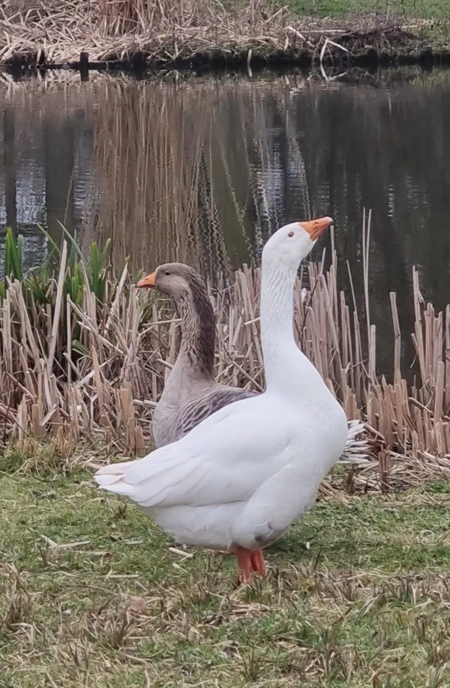
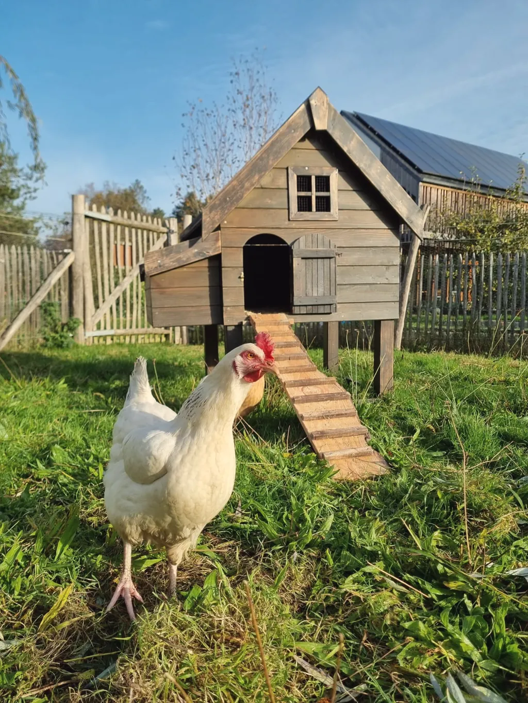
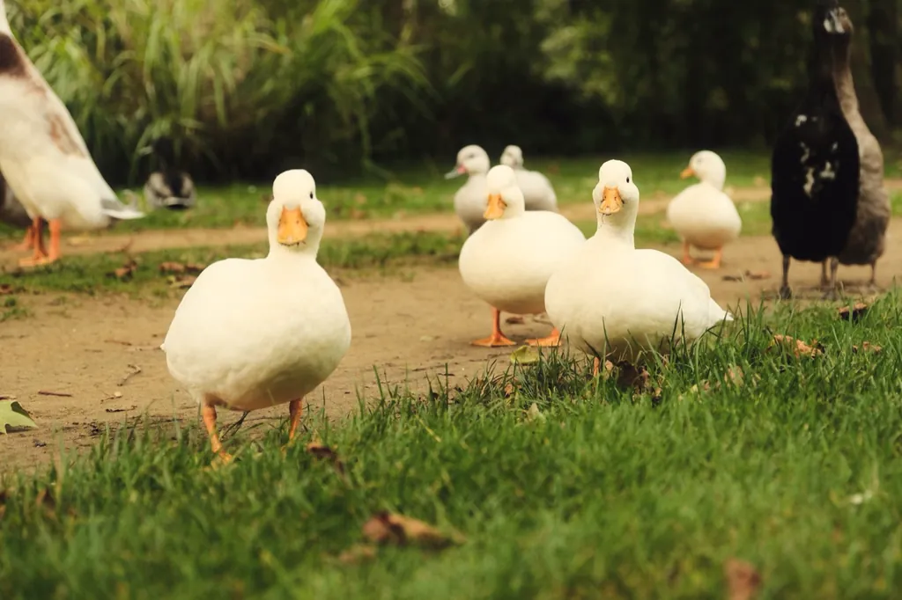
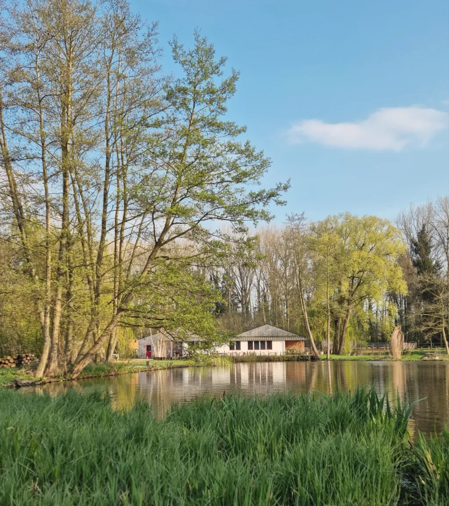

Twee vijvers, weiden, een bos
De camping
Een terrein op mensenmaat aan de rand van het natuurreservaat van de Brou. Wandel over het plan en kom het dan in het echt bekijken.

Het plan, met de pen
Tik op een zone om ze te verkennen. Zoek met het vergrootglas wie zich bij het water verstopt.
De voorzieningen
-
Sanitair
Aparte douches en toiletten voor mannen en vrouwen, een douche en toilet toegankelijk voor rolstoelgebruikers.
-
Babyruimte
Een ruimte om de baby te verschonen.
-
Afwasruimte
Spoelbakken voor de afwas en een kleine handwas.
-
Wasruimte
Wasmachine 4 € per beurt, droogkast 3 € per beurt.
-
Gedeelde eetplek
Barbecues, plancha, kampvuur, tafels en stoelen ter beschikking.
-
Serviceplaats
Lozen van grijs water en chemisch toilet, water bijvullen, regenwater.
-
Elektriciteit 16 A
Op de plaatsen, CEE- of gewoon stopcontact.
-
Gratis wifi
Te vangen rond de ezelweide.
-
Speeltuin
Gloednieuw, midden op de camping.
-
Petanque
Veld voor iedereen, ballen te huur.
-
Vissen
Gratis voor kampeerders, met de boot van de camping.
-
Verse eieren
Eieren van de kippen, te koop aan de receptie.
Het herbarium van de dieren
Tijdens een wandeling over de camping kom je ze allemaal tegen. De wilde dieren komen langs zodra het mooi weer wordt.
-

Equus caballus
Makeba & Happy
Twee sportpaarden die hier gelukkige, rustigere dagen beleven.
-

Equus caballus
Sueño
Een Spaans paard in pension.
-
Equus asinus
Eliot, Paco, Pepito & Firmin
Eliot en Paco werden geadopteerd in het asiel Les Poilus du Blé in Waver. Pepito en Firmin kwamen later.
-
Capra hircus
Emile & Pilou
Onze twee bokken, geadopteerd omdat ze wat meer ruimte nodig hadden.
-

Sus scrofa domesticus
Babe
Een hangbuikzwijn dat als een hond in een gezin opgroeide. Even aanhankelijk als gulzig.
-

Anser anser domesticus
Waldo
Onze witte gent, sinds kort helaas vrijgezel. De ganzen zijn dol op de vijvers.
-

Gallus gallus domesticus
De kippen
Hun eieren zijn te koop aan de receptie.
-

Anas platyrhynchos domesticus · Anas bahamensis
De eenden
De witte dwergeenden, het koppel Bahama-eenden en de loopeenden.
-
Equus caballus
De stallen
Negen paarden van eigenaars, de hele dag buiten in paddocks, in de wei of op de piste.
Het wilde deel
Sommige zones worden bewust weinig onderhouden voor de biodiversiteit en de bestuiving. Zo bieden ze een veilige schuilplaats voor fauna en flora.
In mei kwaken de kikkers de hele nacht. Gevoelig voor geluid? Neem oordopjes mee: ook de ganzen zijn soms praatgraag.
Vlakbij: het natuurreservaat van de Grand Brou, Natura 2000-gebied.

Samenleven op de camping
Enkele eenvoudige regels, zodat iedereen van de rust geniet, mens en dier.
- Rust staat voorop, zeker 's avonds: avondklok om 22u30. te bevestigen
- Kinderen blijven onder toezicht van een volwassene; onder de 12 jaar nooit alleen in het sanitair of de speeltuin.
- Stapvoets rijden: 10 km/u. Na het uitladen gaat de auto naar de parking.
- Honden aan de leiband, nooit alleen, en niet in de gebouwen.
- Barbecue en vuur enkel op de gemeenschappelijke plek, zonder chemische aanmaakblokjes.
- We sorteren: compost, PMD, papier-karton, glas en restafval.
- We voederen de dieren niet, zonder uitzondering.
- Niet zwemmen in de vijvers.
- Groepen enkel na voorafgaand akkoord; de toegangscode is persoonlijk.
Veelgestelde vragen
Wat is de sfeer op de camping?
Een natuurlijke, rustige en gezellige plek. Je komt hier om tot rust te komen en mooie momenten te delen, met respect voor iedereen.
Moet ik vooraf reserveren?
Ja, dat wordt sterk aangeraden, zeker in het hoogseizoen. Zonder reservering kan het soms, afhankelijk van de beschikbaarheid: neem eerst contact op.
Hoe laat kan ik aankomen?
Tussen 15u30 en 18u30 (19u op vrijdag, zaterdag en de dag voor een feestdag), tijdens de openingsuren van de receptie. Niet vroeger en niet later: tussen het vertrek om 12u en 15u30 wordt de camping klaargemaakt. Elke familie meldt zich eerst aan de receptie.
Zijn groepen welkom?
Ja, enkel met voorafgaand akkoord van de directie. Er wordt een groepsverantwoordelijke aangeduid. De toegangscode is persoonlijk.
Is de camping geschikt voor gezinnen?
Ja: speeltuin, petanque en dieren, kinderen zijn er dol op. Ze blijven onder toezicht van hun begeleiders.
Mag ik zwemmen of vissen?
Zwemmen in de vijvers is verboden. Vissen is gratis voor kampeerders, en roeien kan enkel met de boot van de camping.
Zijn honden toegelaten?
Ja, aan de leiband: 5 € per nacht op de plaatsen, 10 € in een pipowagen. Niet toegelaten in de trekkershutten en de gebouwen.
Mag ik met de auto rijden op de camping?
Zo weinig mogelijk: enkel voertuigen waarin je slaapt, blijven op de plaats staan. Maximumsnelheid 10 km/u.